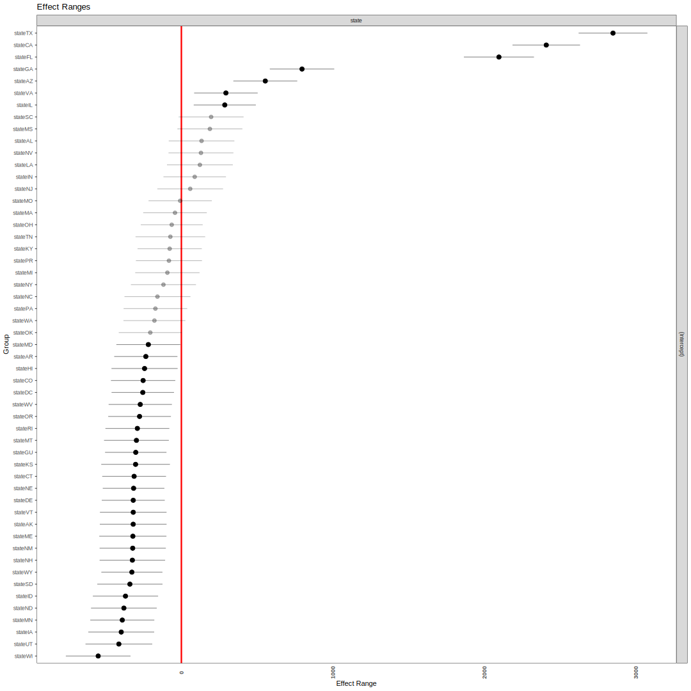
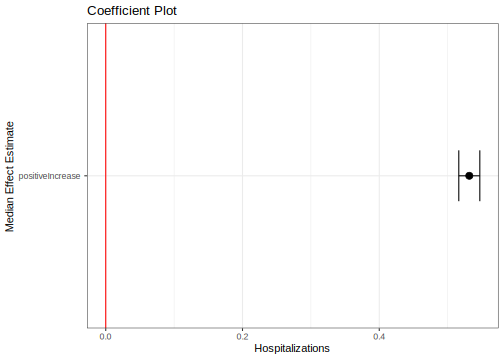
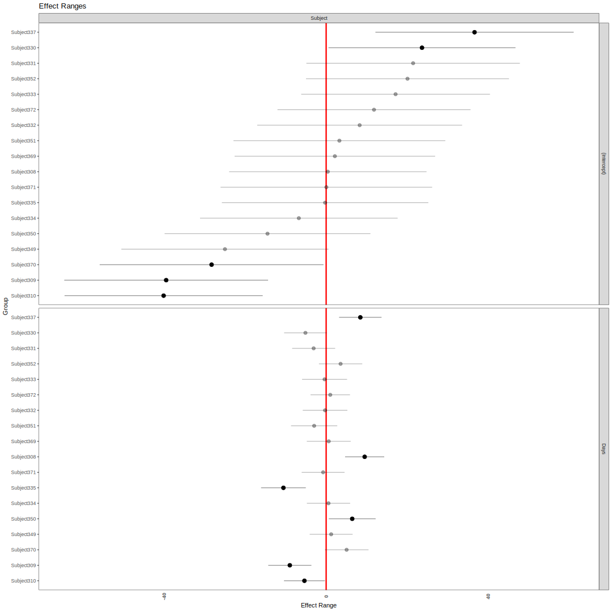

12.5 Random Effects
We have now discussed pooled OLS and fixed effects estimation (often called no-pooling). We will now shift to estimation strategies that involve partial-pooling.
Tradeoff between complete pooling and no-pooling (i.e., fixed effects).
- Complete pooling ignores variation between groups BUT
- No-pooling may overfit the data within group and prevents estimation of “level-2” effects.
To motivate partial-pooling, we can take a look at an example.
Example: What will Mookie Betts’s batting average be in 2018?

- In March 2018, Mookie went 2 for 11. If we fit his average just based on his data \(n_{mookie}=11\), we get an average of .182.
- Over the entire season, Mookie ended up with an average of .346. Is there any way we could have adjusted our initial estimate to end up with a more accurate estimate of what his average would be?
- Possible solution: fit the average based on a combination of Mookie’s data (\(\bar y_{mookie}\)) and data from all players (\(\bar y_{all}\)). It will move Mookie’s estimate closer to the “grand” average across all players by partially pooling his data with the others.
12.5.1 Random effects models
In random effects estimation, for the \(ith\) observation, we allow the intercept \(\alpha\) to vary by some unit \(j\). Where \(j[i]\) refers to the group-level coding for the \(ith\) observation. Perhaps \(j=3\) for \(j[4]\), the 4th observation.
\[\begin{align*} Y_{ij} &= \alpha_{j[i]} + \beta x_{ij} + \epsilon_{ij} \end{align*}\]
The group index is a factor with \(J\) levels.
Approximation of multilevel estimates of the group average in case of no predictors:
\(\hat \alpha_j = \frac{\frac{n_j}{\sigma^2_y}\bar y_j + \frac{1}{\sigma^2_\alpha}\bar y_{all}}{\frac{n_j}{\sigma^2_y} + \frac{1}{\sigma^2_\alpha}}\)
- Assume we have a random sample of \(n\) units within each \(j\), \(n_j\)
- Then, our estimate for a given group \(j\) is a weighted average of observations within \(j\) (\(\bar y_j\)) and the mean overall \(j\)’s (\(\bar y_{all}\)).
- These are weighted according to the variance in \(y\) within \(j\) (\(\sigma^2_y\)) and variance among the averages of \(y\) across \(j\) (\(\sigma^2_\alpha\))
This video by Ben Lambert shows how this idea of a “weighted average” extends to regression with covariates. Random effects provides a balance between fixed effects and OLS, no-pooling and pooling, which is why it is considered partial pooling.
- When \(\sigma^2_\alpha\) is very small, random effects will be close to OLS.
- If \(\sigma^2_\alpha\) is very big, then the weighted balance will be closer to fixed effects.
Differences with pooling and no pooling
- Pooling- intercepts all fixed to \(\alpha\) (\(\sigma^2_{\alpha} = 0\))
- No pooling- \(\alpha_j\)’s correspond to models fit within each \(j\). Do not come from a common distribution.
- A downside: cannot include time-invariant group characteristics.
- Partial pooling (shrinkage)- \(\alpha_j\)’s have a probabilitiy distribution \(\alpha_j \sim N(u_{\alpha}, \sigma^2_{\alpha})\). Has the effect of pulling estimates of \(\alpha_j\) toward the mean of all groups.
- \(\alpha_j = u_{\alpha} + \eta_j\) where \(\eta_j\) is a group-level error term (model without group-level predictors)
- Must assume \(\mathbf E(x_{ij}\alpha_{j[i]}) = 0\). Unmodeled, unmeasured characteristics about your group-level effects (e.g., countries) that affect the outcome are not correlated with the regressors in your model.
- Good news: Can include group-level predictors: Now \(\alpha_j\) coeffcients have a distribution \(\alpha_j \sim N(U_j\gamma, \sigma^2_\alpha)\)
Scholars can have strong feelings about these choices, which often vary by subfield conventions along with the specifics of any research question. For example, the Green et al. piece advocating the use of fixed effects called pooling a ``Dirty Pool." In response, Beck and Katz made the analogy that “Green, Kim, and Yoon’s fixed-effects”cure" for column 3 is akin to curing a cold with chemotherapy" (492).
12.5.2 Random Effects Implementation in R
If comparing with fixed effects, can useplm.
## Firm random effects
data("Grunfeld")
fit.re <- plm(inv~value+capital,
data = Grunfeld,
model = "random",
index = c("firm"),
effect = "individual")
coef(fit.re)["capital"] capital
0.308113 One approach to deciding whether to use fixed vs. random effects is the Hausman test, which assesses the correlation assumption.
## Compares beta hats for FE and RE and covariance
## Under null hypothesis of no correlation estimates should be similar
## Under null, RE preferred due to efficiency gains
fit.within <- plm(inv~capital+value,
data = Grunfeld,
model = "within",
index = c("firm", "year"))
phtest(fit.within, fit.re)
Hausman Test
data: inv ~ capital + value
chisq = 2.3304, df = 2, p-value = 0.3119
alternative hypothesis: one model is inconsistentWith a small p-value, we reject the null, suggesting fixed effects is preferred for this model. With a large p-value, we fail to reject the null, suggesting random effects is preferred. Note: while the test provides one way to adjudicate between fixed and random effects, it cannot tell you if the model you have specified is “correct.”
12.5.3 Using lme4 for random effects
More flexible package for random effects: lme4. Uses “REML” by default- a variation on MLE. Ben Bolker provides a great overview of the package here. Here is a video walking through the syntax and output.
library(lme4)
fit.re2 <- lmer(inv~ value + capital + (1 | firm), data = Grunfeld)
## extract model coefficients
fixef(fit.re2)["capital"] capital
0.3081881 WHERE ARE MY P VALUES?!?!?!?!
summary(fit.re2)$coefficients Estimate Std. Error t value
(Intercept) -57.8644245 29.37775852 -1.969668
value 0.1097897 0.01052676 10.429581
capital 0.3081881 0.01717127 17.947893Not without controversy. Several ways to compute p-values in these models. This post describes three and provides the code.
For example, if you load the package lmerTest prior to running the model, it will include these results using the Satterthwaite method by default. Clicking on the pdf through this link will give you information on what this package does.
library(lme4)
library(lmerTest)
fit.re2 <- lmer(inv~ value + capital + (1 | firm), data = Grunfeld)
summary(fit.re2)Linear mixed model fit by REML. t-tests use Satterthwaite's method [
lmerModLmerTest]
Formula: inv ~ value + capital + (1 | firm)
Data: Grunfeld
REML criterion at convergence: 2195.9
Scaled residuals:
Min 1Q Median 3Q Max
-3.4319 -0.3498 0.0210 0.3592 4.8145
Random effects:
Groups Name Variance Std.Dev.
firm (Intercept) 7367 85.83
Residual 2781 52.74
Number of obs: 200, groups: firm, 10
Fixed effects:
Estimate Std. Error df t value Pr(>|t|)
(Intercept) -57.86442 29.37776 11.10912 -1.97 0.0743 .
value 0.10979 0.01053 120.76227 10.43 <2e-16 ***
capital 0.30819 0.01717 193.71234 17.95 <2e-16 ***
---
Signif. codes: 0 '***' 0.001 '**' 0.01 '*' 0.05 '.' 0.1 ' ' 1
Correlation of Fixed Effects:
(Intr) value
value -0.328
capital -0.019 -0.368
fit warnings:
Some predictor variables are on very different scales: consider rescalingCan use output to interpret the nature of the variance. Note that the summary output includes a table for the Random Effects, the variance, and Std. Dev. of each. We can interpret the intercept row as the variability of the intercept across firms (firm-to-firm) variability. The residual is the left-over or within-firm variability. One use of this is to compute the intraclass correlation coefficient (ICC).
The ICC is the proportion of the variance explained by the grouping structure in the population. The Adjusted ICC indexes how strongly measurements in the same group resemble each other. This index goes from 0, if the grouping conveys no information, to 1, if all observations in a group are identical (Gelman & Hill, 2007, p. 258). If the value were really small, you might not need to include random effects for the grouping factor.
# install.packages("performance")
7367/(7367+2781)[1] 0.7259559performance::icc(fit.re2)# Intraclass Correlation Coefficient
Adjusted ICC: 0.726
Conditional ICC: 0.14012.5.4 Random Effects Extensions
Can have multiple levels. E.g., students (\(i\)) nested in classrooms (\(j\)) nested in schools (\(s\)). Each level may or may not have group-level predictors. Example:
- \(Performance_{ijs} = \beta_{0js[i]} + \beta_1 Income_{ijs} + \beta_2 Gender_{ijs} + \epsilon_{ijs}\) where
- \(\beta_{0js} = \gamma_{0s} + \gamma_{3}Teacher_{js} + r_{js}\) and
- \(\gamma_{0s} = z + v_{s}\)
- Combined: \(Performance_{ijs} = m + m_{1}Teacher_{js} + m_2 Income_{ijs} + m_3 Gender_{ijs} + v_{s} + r_{js} + \epsilon_{ijs}\)
Levels can be nested or non-nested. Students are nested in schools, but for a different example, survey questions may not be nested in a single poll. Perhaps some items are repeated across different polls.
Can allow slopes (regression coefficients to vary). Perhaps the effect of gender on student success varies by classroom. Then \(\beta_{2}\) becomes \(\beta_{j, 2} = \gamma_{1s} + r_{1js}\).
Let’s return to the Grunfeld data and fit the following model:
## firm and year random intercepts
fit.retwoways <- lmer(inv~ value + capital +
(1 | firm) +
(1 | year),
data = Grunfeld)
fixef(fit.retwoways)["capital"] capital
0.3106319 Sleep deprivation study: how is a subject’s reaction time associated with sleep deprivation?
data(sleepstudy)
## Random intercepts for subjects
fit.re3 <- lmer(Reaction ~ Days + (1 | Subject), data = sleepstudy)
fixef(fit.re3)["Days"] Days
10.46729 ## Random intercepts for subject, varying slope for days
fit.re4 <- lmer(Reaction ~ Days + (Days | Subject), data = sleepstudy)
fixef(fit.re4)["Days"] Days
10.46729 Recall, the big assumption when adding random effects is that the unobserved group-level random disturbances caught through the intercept terms are not correlated with the regressors.
One suggestion is if concerned about correlation between predictors \(x_i\) and group effects \(\alpha_j\), add group means of regressors as predictors in the model.
12.5.5 Extracting lmer output
Caution: coef(), ranef(), and fixef() all different.
coef()produces the set of regression coefficients associated with each group
## Example from random intercepts model
head(coef(fit.re3))$Subject
(Intercept) Days
308 292.1888 10.46729
309 173.5556 10.46729
310 188.2965 10.46729
330 255.8115 10.46729
331 261.6213 10.46729
332 259.6263 10.46729
333 267.9056 10.46729
334 248.4081 10.46729
335 206.1230 10.46729
337 323.5878 10.46729
349 230.2089 10.46729
350 265.5165 10.46729
351 243.5429 10.46729
352 287.7835 10.46729
369 258.4415 10.46729
370 245.0424 10.46729
371 248.1108 10.46729
372 269.5209 10.46729fixef()produces the set of fixed effects regression coefficients– similar to OLS– with global intercept.
## Example from random intercepts model
fixef(fit.re3)(Intercept) Days
251.40510 10.46729 ranef()produces the set of random effects as deviations from the global estimates
## Example from random intercepts model
head(ranef(fit.re3)$Subject) (Intercept)
308 40.783710
309 -77.849554
310 -63.108567
330 4.406442
331 10.216189
332 8.221238## Note the relationship between the three for the first [1] subject
fixef(fit.re3)[1] + ranef(fit.re3)$Subject[1,](Intercept)
292.1888 coef(fit.re3)$Subject[1,1][1] 292.188812.5.6 Generating predicted values for each unit
## Manual
allsubjects <- unique(sleepstudy$Subject)
for(i in 1:nrow(sleepstudy)){
n <- as.character(sleepstudy$Subject[i])
sleepstudy$subjectRE[i] <- ranef(fit.re3)$Subject[n, 1]
}
## XB like usual, but need to add random effects
yhat <- model.matrix(fit.re3)%*%fixef(fit.re3) + sleepstudy$subjectRE
## Compare to Automatic
cbind(yhat, fitted(fit.re3), predict(fit.re3, type = "response"))[1:5,] [,1] [,2] [,3]
1 292.1888 292.1888 292.1888
2 302.6561 302.6561 302.6561
3 313.1234 313.1234 313.1234
4 323.5907 323.5907 323.5907
5 334.0580 334.0580 334.0580Predicting out of sample. Can “ignore” random effects if desired.
- This is often how people make predictions for hypothetical values of the main covariates– without specifying specific groups.
predict(fit.re3, newdata= data.frame(Days = 4), type = "response", re.form = NA) 1
293.2742 fixef(fit.re3)[1] + 4*fixef(fit.re3)[2](Intercept)
293.2742 Compare predictions if we ignored the random effects:
cbind(yhat,
predict(fit.re3, type = "response"),
predict(fit.re3, type = "response", re.form=NA),
model.matrix(fit.re3)%*%fixef(fit.re3))[1:5,] [,1] [,2] [,3] [,4]
1 292.1888 292.1888 251.4051 251.4051
2 302.6561 302.6561 261.8724 261.8724
3 313.1234 313.1234 272.3397 272.3397
4 323.5907 323.5907 282.8070 282.8070
5 334.0580 334.0580 293.2742 293.274212.5.7 Week 11 Tutorial
In this section, we are going to again use data from the CDC on national and state-level COVID hospitalizations and positive case increases between July 2020- end September 2020 to give some examples of how to visualize random effects.
Let’s load the state data.
library(rio)
states <- import("https://github.com/ktmccabe/teachingdata/blob/main/states.RData?raw=true")
head(states) date hospitalizedCurrently positiveIncrease state
8849 2020-09-30 53 104 AK
8850 2020-09-30 776 1147 AL
8851 2020-09-30 484 942 AR
8853 2020-09-30 560 323 AZ
8854 2020-09-30 3267 3200 CA
8855 2020-09-30 264 511 COLet’s fit a random effects model with random intercepts for states.
## Random Effects
library(lme4)
library(lmerTest)
fit.re <- lmer(hospitalizedCurrently ~ positiveIncrease
+ (1 | state), data=states)
summary(fit.re)Linear mixed model fit by REML. t-tests use Satterthwaite's method [
lmerModLmerTest]
Formula: hospitalizedCurrently ~ positiveIncrease + (1 | state)
Data: states
REML criterion at convergence: 72042.8
Scaled residuals:
Min 1Q Median 3Q Max
-21.4649 -0.1578 0.0012 0.1414 12.3407
Random effects:
Groups Name Variance Std.Dev.
state (Intercept) 439843 663.2
Residual 194044 440.5
Number of obs: 4780, groups: state, 53
Fixed effects:
Estimate Std. Error df t value Pr(>|t|)
(Intercept) 3.273e+02 9.160e+01 5.131e+01 3.573 0.000779 ***
positiveIncrease 5.317e-01 7.745e-03 4.774e+03 68.644 < 2e-16 ***
---
Signif. codes: 0 '***' 0.001 '**' 0.01 '*' 0.05 '.' 0.1 ' ' 1
Correlation of Fixed Effects:
(Intr)
positvIncrs -0.078
fit warnings:
Some predictor variables are on very different scales: consider rescalingperformance::icc(fit.re)# Intraclass Correlation Coefficient
Adjusted ICC: 0.694
Conditional ICC: 0.325The function dotplot from the lattice package provides a fast way to visualize the random effects of the model.
library(lattice)
dotplot(ranef(fit.re), condVar=TRUE)$state
The merTools package also has many useful functions. For example, the plotREsim function acts similar to the dotplot function and will plot the random effects for each group.
## install.packages("merTools")
library(merTools)
plotREsim(REsim(fit.re), labs=TRUE)+
coord_flip()
The package also has a tool for plotting the coefficient results with confidence intervals constructed through simulation. If you had several variables, the plot would display all coefficients.
feEx <- FEsim(fit.re, 1000)
head(feEx) term mean median sd
1 (Intercept) 329.9960634 326.9098575 89.830835351
2 positiveIncrease 0.5316118 0.5316907 0.007843397plotFEsim(feEx) +
theme_bw() +
labs(title = "Coefficient Plot",
x = "Median Effect Estimate",
y = "Hospitalizations")
For more on this tool’s capabilities, particularly as it relates to generating predicted values, see here.
Finally, let’s try another model using the sleepstudy data to show how the plots can also incorporate varying slopes.
library(lme4)
data("sleepstudy")
## Random intercepts for subject, varying slope for days
fit.re4 <- lmer(Reaction ~ Days + (Days | Subject), data = sleepstudy)library(merTools)
plotREsim(REsim(fit.re4), labs=TRUE)+
coord_flip()
12.5.8 Generalized LMER
Generalized Linear Mixed Effects Regression: glmer() is to lmer() as glm() is to lm(). Example:
## What if reaction time was dichotomous?
sleepstudy$rdi <- ifelse(sleepstudy$Reaction >
mean(sleepstudy$Reaction), 1, 0)
## GLMER with logit
fit.glmer <- glmer(rdi ~ Days + (1 | Subject),
data = sleepstudy,
family = binomial(link = "logit"))Generating predicted probabilities for each unit
## Manual
allsubjects <- unique(sleepstudy$Subject)
for(i in 1:nrow(sleepstudy)){
n <- as.character(sleepstudy$Subject[i])
sleepstudy$subjectRE[i] <- ranef(fit.glmer)$Subject[n, 1]
}
## XB like usual, but need to add random effects
py <- plogis(model.matrix(fit.glmer)%*%fixef(fit.glmer) + sleepstudy$subjectRE)
## Compare to Automatic
cbind(py, fitted(fit.glmer), predict(fit.glmer, type = "response"))[1:5,] [,1] [,2] [,3]
1 0.1047843 0.1047843 0.1047843
2 0.1721090 0.1721090 0.1721090
3 0.2696603 0.2696603 0.2696603
4 0.3960526 0.3960526 0.3960526
5 0.5380430 0.5380430 0.5380430